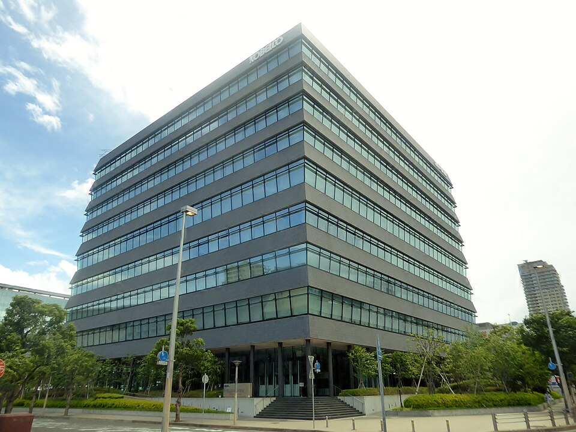
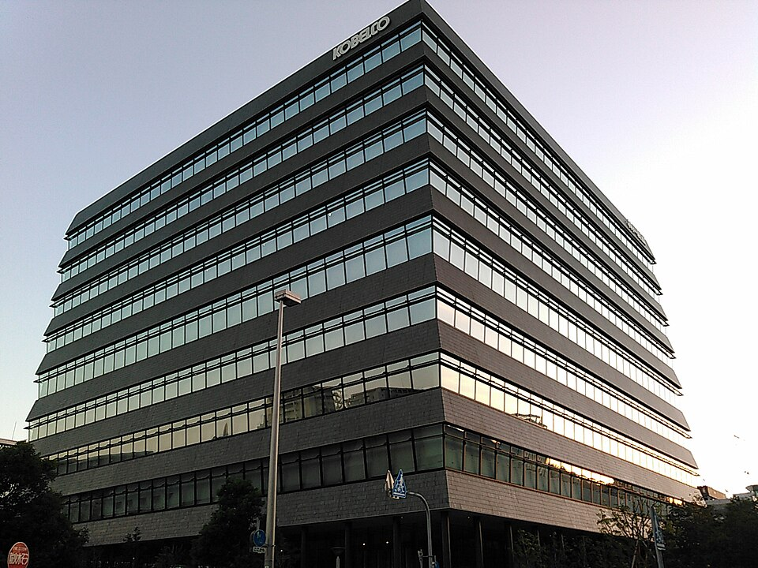
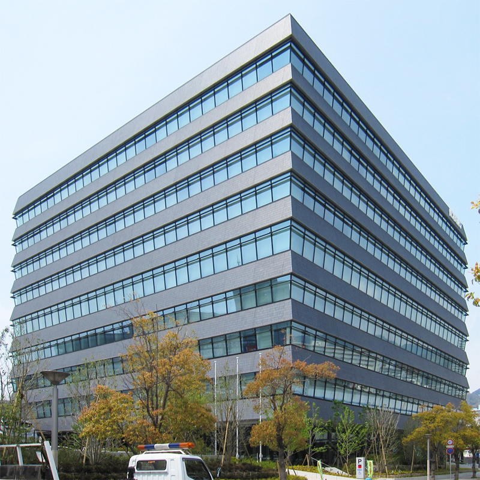
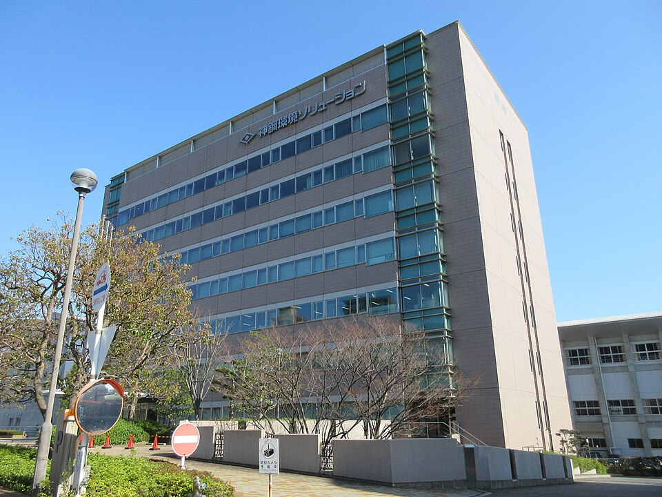

川
川崎博也
かわさき・ひろや
代表取締役会長兼社長
役割：品質問題調査委員会の委員長。代表取締役を辞任
その後：2018年4月1日付で辞任12
1970年代〜2026年
神戸製鋼所グループでは、顧客仕様や公的規格を満たさない製品について、検査値を書き換えたり。未測定の数値を作成したりして適合品として出荷していた。1
2017年8月末のアルミ・銅事業部門での発見から調査範囲が広がり、本体の複数拠点とグループ会社16社、延べ納入先688社に関係する不適切行為が確認された。2
外部調査委員会は、収益偏重、事業部門への権限委譲、閉鎖的な組織、検査手続の不備、役員の未報告を原因として整理し、会社は罰金1億円、経営陣の辞任・退任、JIS認証処分。国内外の訴訟に直面した。3
2016年6月、神鋼鋼線ステンレスでJIS法違反の品質問題が発覚した。神戸製鋼所はこれを契機にグループ全体を対象とする品質総点検を開始し、同年11月には本社に品質統括室を設置した。2017年4月には全事業部門を対象とする本社主導品質監査が始まり、Next100プロジェクトも開始された。しかし調査メモが示す後の経緯では、本社の監査が各工場の検査記録や長年の慣行を十分に把握できず、品質統制の仕組みが不適切行為を早期に止めるまでには至らなかった。145
このたび、当社のアルミ・銅事業部門（同部門傘下のグループ会社を含む。）において、お客様との間で取り交わした製品仕様に適合していない一部の製品につき、検査証明書のデータの書き換え等を行うことにより、当該仕様に適合するものとして、出荷していた事実（以下「本件不適切行為」といいます。）が判明しました。 本件不適切行為は、当社が過去1年間に出荷した製品を対象として実施した契約遵守状況の自主点検及び緊急品質監査を通じて判明したものです。本件不適切行為の対象として現時点で判明している製品（以下「本件不適合製品」といいます。）の概要は以下のとおりです。 主な製品： アルミ板、アルミ押出品、銅板条、銅管及びアルミ鋳鍛造品 当社は、事態の重大性に鑑み、当社会長兼社長である川崎博也を委員長とする品質問題調査委員会を設置するとともに、外部法律事務所に対し、本件不適切行為に係る事実関係の調査を依頼しており、現在、この調査が進められているところです。 このような重大事案を生じさせたことは慙愧に堪えず、深く反省するとともに、お客様をはじめ、関係者の皆様に多大なご心配、ご迷惑をお掛けしますことを心よりお詫び申し上げます。
意味：発覚直後の会社自身の認定であり、仕様不適合品を検査証明書の書換えによって適合品として出荷したことを明記している。[URL](https://www.kobelco.co.jp/releases/1197805_15541.html)
神戸製鋼所は2017年8月初旬、過去1年間の出荷品について自主点検を要請した。同月末、アルミ・銅事業部門の4事業所で、顧客仕様や公的規格を満たさない製品について検査データを書き換え。または測定したように数値を作成する行為が見つかった。会社は不適合品の出荷を停止し、2017年10月8日にアルミ・銅製品の不適切行為を公表した。自動車、航空機、鉄道車両、半導体、端子、空調機器などのサプライチェーンに製品が組み込まれていたため。会社は顧客への連絡と安全性検証を開始した。267
本件不適切行為全体における具体的内容としては、例えば、顧客仕様を満たさない検査結果について満たす数値に改ざんする行為、実際に測定が行われていないにもかかわらず、測定したかのように試験結果をねつ造する行為などが確認されました（本報告書 9～39 ページ）。 外部調査委員会による調査の結果、本件不適切行為全体を通じて役員の関与が認められたのはアルミ・銅事業部門のみでした。具体的には、2 名の執行役員は、本件不適切行為が行われていた工場での勤務経験があり、その当時、本件不適切行為に直接関与したことはなかったものの、その存在を認識しており、これを自身の上司であったアルミ・銅事業部門長等に報告等をしていませんでした。
意味：不正の手口が単なる記載ミスではなく、改ざんと未測定データのねつ造だったこと、さらに役員が存在を認識しながら報告しなかったことを示す。[URL](https://www.kobelco.co.jp/about-kobelco/progress/report.html)
公表後の調査はアルミ・銅製品だけにとどまらなかった。10月11日には高砂製作所の粉末冶金用鉄粉で、2016年度に1鋼種・1顧客向け年間140トンが対象となった事例が公表された。10月13日には神鋼メタルプロダクツの銅合金管約700トンとモールド約5,300個が追加された。10月16日にはKobe Steel USAが米国司法当局から、米国顧客向け仕様不適合製品に関する書類提出要求を受領した。10月20日にもグループ会社の事例が追加され、当初発表された範囲は段階的に広がった。389
外部調査委員会による調査結果と当社における検討から、本件不適切行為を引き起こした原因は、（1）収益偏重の経営と不十分な組織体制、（2）バランスを欠いた工場運営と社員の品質コンプライアンス意識の低下、（3）本件不適切行為を容易にする不十分な品質管理手続、の三つに集約されると考えています。具体的には、以下のとおりです。 本社の収益評価に偏った経営姿勢に従って、各事業部門は工程能力を十分に検証することなく受注をするといった生産至上主義に陥りました。加えて、各事業部門への大幅な権限委譲が本社による統制力の低下を引き起こし、本社による品質コンプライアンス統制が十分に機能しませんでした。また、本件不適切行為が早期発見に至らなかったガバナンス上の要因として、過去に本件不適切行為と類似の行為が発覚した際に当社経営陣が抜本的な対応を行わなかったことや、事業部門内における監査が十分に行き届いていなかったことが挙げられます。
意味：会社報告書が、現場担当者だけでなく本社の収益評価や権限委譲と過去の対応不備を組織原因として認定している。[URL](https://www.kobelco.co.jp/about-kobelco/progress/report.html)
2017年10月25日、会社は自主点検を概ね完了したとしながら、追加4件と長府製造所での妨害行為を確認した。発覚直後の社内品質問題調査委員会は川崎博也会長兼社長が委員長だったため、会社は10月26日、元福岡高検検事長で弁護士の松井巖を委員長とする外部調査委員会を設置した。委員会には、自主点検と緊急監査の方法の検証、直接原因、企業風土、コンプライアンス、組織運営体制の調査。再発防止策の提言が委ねられた。ここで調査の主体が経営トップの社内委員会から外部委員会へ移った。1011
工程能力に見合わない顧客仕様等に基づく製品の製造、受注の獲得と納期の達成を至上命題とする生産・納期優先の風土、事業部門を横断した人事交流や人事異動がほとんど存在しない閉鎖的な組織、適切な教育・研修や懲戒処分が行われてこなかった状況、顧客仕様を逸脱しても、一定程度ならば安全性の問題はないため、出荷しても構わないといった誤った考え方、これらの事情と相俟って引き起こされた社員の品質コンプライアンス意識の鈍麻が、本件不適切行為の動機となり、またそれを継続させた要因となったものと考えられます。
意味：不正を続けさせた心理と人間関係の背景を、納期優先や閉鎖性と懲戒不足及び安全性を理由にした正当化として具体化している。[URL](https://www.kobelco.co.jp/about-kobelco/progress/report.html)
2018年3月6日の最終報告書は、役員の関与が認められたのはアルミ・銅事業部門だったとした。2名の執行役員は工場勤務時代に不適切行為を認識していたが、アルミ・銅事業部門長等へ報告しなかった。別の執行役員は2017年4月に認識した後、規格外れと規格外製品の出荷を徐々になくす方針を決め、工程改善や受注の一部停止を指示するにとどまった。さらに2名の過去の役員は、役員就任前に直接関与し、就任後も取締役会に報告せず。停止・改善措置を取らなかったとされた。6
「機会があれば取りあえず受注する」、「できるだけ沢山の製品を生産して利益を上げる」といった生産至上主義により、各拠点では、受注の成功と納期の達成を至上命題とする生産・納期優先の風土が形成。 とりわけ、アルミ・銅事業部門においては、十分な収益貢献を果たすことができず苦しんできたという歴史的背景があり、何とかして収益貢献を果たしたいという強い思いを有していたことが、無理な受注や顧客仕様の軽視に見られるような、顕著な生産・納期優先の風土を生む一つの要因となった。
意味：経産省資料が会社報告書を引用し、収益貢献への圧力が無理な受注と顧客仕様軽視につながった構図を示している。[URL](https://www.meti.go.jp/shingikai/economy/cgs_kenkyukai/pdf/2_007_04_00.pdf)
外部調査委員会と会社は原因を、収益偏重の経営と不十分な組織体制、バランスを欠いた工場運営と品質コンプライアンス意識の低下。改ざん・ねつ造を容易にする不十分な品質管理手続の三つに整理した。本社の収益評価に偏った姿勢は、工程能力を十分に検証しないまま受注する生産至上主義につながった。事業部門への大幅な権限委譲は本社の統制力を低下させ、事業部門を横断する人事交流の少なさは不適切行為を数代にわたり引き継ぐ条件になった。検査員が手作業で記録し、担当者がミルシートを作り、事務員等が記録を書き換えられる工程に。ダブルチェックがなかった。65
①検査員が手作業で検査結果を記録、②担当者が手作業でミルシート（鋼材検査証明書）を作成、③製造部門又は品質保証部門の事務員等が、検査記録を自由に書き換えられる状態等、容易に検査結果を改ざん又はねつ造可能な検査プロセスであり、本件不適切行為に対する有効な牽制が全くなされていない状況。 検査員やミルシート担当者がそれぞれ単独で業務を行っており、ダブルチェック等を行う業務フローは存在せず、かつ人事ローテーションも行われないまま長期間同じ業務に従事。 一部の社内基準については、およそ遵守することが困難な基準が設定されており、社内基準を満たさないことが常態化。
意味：改ざんを可能にした具体的な工程、人員配置、社内基準の問題を列挙している。[URL](https://www.meti.go.jp/shingikai/economy/cgs_kenkyukai/pdf/2_007_04_00.pdf)
最終報告書の公表日に、川崎博也会長兼社長と金子明代表取締役副社長執行役員は4月1日付で代表取締役を辞任すると発表された。藤井拓己と磯野誠昭は常務執行役員を退任し、平田誠二には減俸80％・4か月の措置が示された。3月9日には山口貢の社長就任が発表された。2018年7月19日、東京地方検察庁は品質に係る不適切行為の一部について神戸製鋼所を不正競争防止法違反で起訴し、2019年3月13日に立川簡易裁判所が罰金1億円を言い渡した。会社発表で確認できる刑事判決は法人へのこの罰金で、個人役員や工場担当者への有罪判決は今回の資料では確認できない。121314
（問）日産自動車と神戸製鋼の両方に絡む話だと思いますが、今までものづくりの信頼性が高かった日本で、立て続けに相次いでデータ改ざんを含めた法令意識が低い事案が発生しております。 （答）日産自動車の不適切な完成検査、また神戸製鋼所による製品の検査データ改ざん、こういった不適切な行為は、高品質で安全・安心と評価されてきた日本のものづくりに対する信頼を揺るがすような事態であり、極めて遺憾であります。 徹底的に原因を究明し、再発防止策を講ずる等、一日も早い信頼回復に向けて経営陣が当事者意識と主体性を持って取組を進めていただきたいと考えております。
意味：所管大臣が、個別企業の問題を日本の製造業全体への信頼問題として受け止め、経営陣の主体性を求めている。[URL](https://www.mlit.go.jp/report/interview/daijin171020.html)
米国ADR購入者は米国証券法違反を主張して提訴し、2019年2月に50万ドルの和解が承認された。カナダ集団訴訟では2019年6月に1,950万カナダドルの和解が公表された。一方、米国司法当局は2017年10月に資料提出を要求したが、2019年7月に追加確認・報告・関連文書の提出保存は不要と通知し。会社は処分手続に進まないと判断した。2020年代も安全性検証、JIS認証、再発防止策の進捗が公表され。2021年には原子力規制委員会が関連報告書の修正結果を公表した。2026年11月15日時点で米国司法省による刑事罰金・起訴があったとは確認できない。15161718
原子力機構では、神戸製鋼所からの詳細説明聴取を2月13日から順次進め、これまでに、平成24年度から28年度までに原子力機構が発注した16件の腐食分析作業の契約（別紙参照）において、保管されている元データと報告書上のデータに不整合があるものや、元データが存在しないものがあることを確認しました。これらの中には平成24年から26年度までの原子力安全・保安院及び原子力規制庁からの受託事業に関わるもの、並びに、平成26年から28年度までの経済産業省資源エネルギー庁からの受託事業に関わるものが含まれています。 神戸製鋼所によると、この内、腐食分析作業におけるデータの不適切行為があったと認められるデータは、ジルカロイや炭素鋼の腐食速度を定量するための水溶液中での水素発生量測定試験データや、試験後の表面分析データ等で、実際は分析が行われていなかった可能性が高いもの（ねつ造）及び意図的に元データと異なるデータを報告書に記載したもの（改ざん）ということです。
意味：原子力機構の発注案件について、元データ欠落・不整合や未実施分析と元データと異なる報告を具体的に確認している。[URL](https://www.jaea.go.jp/news/newsbox/2018/030601/)
不適切行為が公表された後。問題は製造現場の検査記録だけで終わらなかった。会社は不適合製品を使用した顧客製品について安全性を検証し、JIS表示認定やJIS認証の取消し・一時停止に対応した。政府答弁書では、2013年3月から2018年2月までに政府へ直接出荷した防衛分野製品が計十六とされ、コベルコ科研の原子力関連受託研究でもデータ改ざん等が把握された。原子力機構は、16件の腐食分析作業で元データと報告書上のデータの不整合や元データが存在しないものを確認した。会社の米国調査終了公表は刑事罰金が科されたことを示すものではなく、国内の罰金判決や民事和解と区別して確認する。顧客の安全性検証、認証機関の処分、行政機関の確認、株主・購入者の訴訟は。それぞれ異なる手続で進んだ。これらを同じ結論として扱わず、誰が何を確認し、どの主体がどの責任を負ったかを分けて記録する。91917
本日、証券取引等監視委員会から、2017年10月8日に当社が品質に関する不適切行為を公表する前に、その情報を知り得た従業員が当社株式の売買を行ったとして、当社従業員２名による当社株式の売買取引が金融商品取引法違反（インサイダー取引）に該当するとして、内閣総理大臣及び金融庁長官に対して、上記２名に対する課徴金納付命令を発出するよう勧告を行った旨が公表されました。 当社では、インサイダー取引防止規程を設け、また、従業員には社内研修等を通じてインサイダー取引の防止に取り組んでまいりました。 そのような中で、このような事態が発生したことは誠に遺憾であります。 当社は、今回の勧告を厳粛に受け止め、今後更なる社内体制の強化と社内教育を徹底し、再発防止に努めてまいります。
意味：品質不正の公表前情報を知った従業員2名の株式売買について、インサイダー取引該当の勧告が公表されたことを示す。[URL](https://www.kobelco.co.jp/releases/files/20190621_1_01.pdf)
この事件では、検査を実行した匿名の担当者、報告しなかった役員、事業部門を監督した経営陣、法人として出荷と開示を行った神戸製鋼所、認証を扱った機関。提訴した購入者が異なる位置にいた。最終報告書は、現場の行為だけでなく、人事、監査、取締役会への報告。顧客仕様の扱いを同時に調査対象とした。6
また、他の執行役員1名は、昨年4月に本件不適切行為が行われていることを認識しましたが、規格外れの発生及び規格外製品の出荷を徐々になくしていくことを基本方針として決定し、製造工程の改善や受注の一部停止を指示するにとどまっておりました。 過去の役員では、2 名の取締役・執行役員が役員就任以前に本件不適切行為に直接関与していたことが認められ、役員就任後もそれを取締役会に報告せず、また、それを中止・改善させる等の措置を講じていませんでした。 表1のとおり、本件不適切行為は、アルミ・銅事業部門のみでなく、その他の事業部門や当社グループ会社でも行われていたものであり、当社は、当社グループの多くの拠点で行われていた事実を重く受け止めております。
意味：問題を直ちに停止・是正せず、徐々に縮小する方針にとどめた経営判断と、取締役会への未報告を記録している。[URL](https://www.kobelco.co.jp/about-kobelco/progress/report.html)
公開資料の範囲を記録する。6
当該自主点検及び緊急監査と並行して、不適合製品を使用したお客様の製品に関する安全性の検証をお客様のご協力を頂きながら実施してまいりました。本日、その安全性の検証状況及び外部調査委員会の設置についてご報告いたします。 当社は、当社グループにおける今回の不適切行為の発覚後、社内に「品質問題調査委員会（委員長川崎博也会長兼社長）」を設置し、自主点検、本社部門による緊急監査、外部法律事務所による不適切行為に係る事実関係の調査を実施してまいりました。 これらの自主点検・緊急監査及び事実関係に係る調査は10月25日にほぼ終了し、今後は、これまで実施してきた当社グループによる自主点検・緊急監査の方法・内容などについての適正性や妥当性の再検証、本件不適切行為の徹底的な原因の究明（直接的な原因のみならず、企業風土、コンプライアンスおよび組織運営体制の課題といった背景となる要因等を含みます。）と再発防止策の検討を開始いたします。 これらの再検証等を進めるにあたっては、自主点検の過程において妨害行為があったことも踏まえ、客観性・独立性を担保することが必要との観点から、外部委員のみで構成する「外部調査委員会」を10月26日付で設置することとし、この「外部調査委員会」を今後の調査の主体といたします。
意味：社内調査の限界だけでなく、自主点検への妨害行為があったため、外部委員による調査へ移行した経緯が分かる。[URL](https://www.kobelco.co.jp/releases/1197904_15541.html)




| 神戸製鋼所神戸本社 | 兵庫県神戸市中央区脇浜海岸通2-2-4 | 経営・品質統括の本社 | 27 |
| 神戸製鋼所東京本社 | 東京都品川区北品川5-9-12 | 東京の本社機能・対外対応 | 27 |
| 真岡製造所 | 栃木県真岡市鬼怒ケ丘15 | アルミ製品・「トクサイ」と関連付けられた拠点 | 4 |
| 長府製造所 | 山口県下関市長府港町14-1 | アルミ押出品等、点検妨害・JIS停止と関連 | 23 |
| 大安製造所 | 三重県いなべ市大安町梅戸1100 | アルミ・銅事業部門の対象拠点 | 4 |
| 高砂製作所 | 兵庫県高砂市荒井町新浜2-3-1 | 鉄粉製品の不適切行為 | 3 |
| 加古川製鉄所 | 兵庫県加古川市金沢町1 | 神戸製鋼所の主要製鉄拠点 | 28 |
| 神鋼メタルプロダクツ | 山口県下関市長府港町14-1 | 銅合金管・モールドの対象会社 | 8 |
| 東京地方裁判所 | 東京都千代田区霞が関1-1-4 | 起訴主体である東京地検と関係する裁判所地域 | 29 |
| 立川簡易裁判所 | 東京都立川市緑町10-4 | 罰金1億円判決 | 14 |
| 東京地方検察庁 | 東京都千代田区霞が関1-1-1 | 2018年7月の起訴 | 23 |
| 米国司法省本部 | Washington, D.C., USA | 米国司法当局による資料提出要求・調査 | 17 |
顧客の発注と納期達成を優先する評価の下で、工場の検査員・品質保証担当が実測値を書き換え、または未測定値を作成し。顧客仕様に適合する検査成績書として出荷した。6
かわさき・ひろや
代表取締役会長兼社長
役割：品質問題調査委員会の委員長。代表取締役を辞任
その後：2018年4月1日付で辞任12
かねこ・あきら
代表取締役副社長執行役員・アルミ銅事業担当
役割：アルミ・銅事業部門の経営責任を負った
その後：2018年4月1日付で代表取締役を辞任12
やまぐち・みつぐ
代表取締役副社長執行役員
役割：川崎の後任として社長に就任
その後：2018年4月1日社長就任13
まつい・いわお
外部調査委員会委員長・弁護士
役割：外部調査の主体を務めた
その後：調査報告書を取りまとめ10
ふじい・たくみ
常務執行役員
役割：経営陣の処分対象
その後：2018年3月6日付で退任12
いその・しげあき
常務執行役員
役割：経営陣の処分対象
その後：2018年3月6日付で退任12
ひらた・せいじ
執行役員
役割：経営陣の処分対象
その後：減俸80％・4か月12
あべ・しんぞう
内閣総理大臣
役割：政府答弁書の名義人
その後：事件の実行者ではない9
おくの・そういちろう
衆議院議員
役割：検査データ改ざん問題について政府に質問書を提出
その後：政府答弁書で回答9
ダニエル・オード
米国ADR等購入者クラスの代表原告
役割：米国証券法違反を主張して提訴
その後：50万ドルの和解15
過去の取締役・執行役員
役割：役員就任前の直接関与と就任後の未報告が認定された
その後：氏名は一次資料で匿名化6
事業部門長等
役割：不適切行為を認識した執行役員の報告先
その後：個人名は未確認6
工場管理者
役割：工場単位の不適切行為に関係する管理主体
その後：個人名は未確認6
米国子会社担当者
役割：米国司法当局の資料提出要求を受領
その後：個人名は未確認9
相関図は、品質不正を認識しながら報告しなかった役員、検査工程を担った匿名主体。調査・起訴・訴訟の関係を示す。線の種類は、上下関係、調査、対立、告発、金銭。処分を表す。
上司と部下・経営責任。川崎は会長兼社長、金子は代表取締役副社長でアルミ・銅事業を担当した。品質問題を受け、両名が同日付で代表取締役を辞任した。KOBELCO人事12
経営交代。川崎の辞任後、山口が代表取締役社長に就任し、再発防止策と信頼回復を引き継いだ。KOBELCO人事13
上司と部下・統制。発覚後の社内品質問題調査委員会は川崎を委員長としていた。経営トップが社内調査を主導した点は、後の外部調査委員会設置の背景となった。KOBELCO公式7
対立・確執。川崎主導の社内調査から、松井委員長の外部調査委員会へ調査が移管された。公開資料は個人的対立を認定していない。KOBELCO公式10
上司と部下。金子はアルミ・銅事業担当の代表取締役副社長であり、同部門の経営責任を負う立場だった。KOBELCO人事12
庇護・調査。松井は元福岡高検検事長・弁護士として、会社と利害関係のない外部委員会の委員長を務めた。KOBELCO公式10
対立・確執。委員会は、収益偏重、権限委譲、閉鎖的組織、検査手続の不備など。会社の経営・組織上の原因を指摘した。KOBELCO報告書6
上司と部下・裏切り。2名は工場勤務時に不適切行為を認識したが、上司であるアルミ・銅事業部門長等へ報告しなかった。KOBELCO報告書6
上司と部下。2017年4月に不適切行為を認識した執行役員は、段階的縮小を基本方針とし、受注の一部停止等を指示した。KOBELCO報告書6
裏切り・告発。役員就任前に直接関与した2名は、就任後も取締役会へ報告しなかったとされた。KOBELCO報告書6
上司と部下。検査員や品質保証スタッフが、検査値の書換え・ねつ造を実行したと報告書に記載されるが、実名は公表されていない。KOBELCO報告書6
資金の出し手と受け手。顧客は仕様適合を前提に製品代金を支払い、工場側は不適合品を適合品として納入した。個別の代金額は未確認。KOBELCO報告書6
対立・確執。ADR購入者は米国証券法違反を主張して提訴し、会社は50万ドルで和解した。KOBELCO和解15
対立・調査。米国司法当局は資料提出を求め、会社は資料保存・提出に協力した。2019年7月に調査終了通知を受けた。KOBELCO米国調査終了17
対立・刑事責任。東京地検は2018年7月に不正競争防止法違反で会社を起訴し、2019年3月に罰金判決が出た。KOBELCO判決14
事業部門を横断した人事交流や人事異動がほとんど存在せず、工場長や事業部門の担当執行役員が、当該事業部門に所属する拠点の出身者である例も少なくなかった。 かつて本件不適切行為に関与した者自身が上位職へと昇進し、数代にわたって本件不適切行為が引き継がれていったことにより、本来であれば部下を監督すべき立場にある上司自身が、本件不適切行為を指示し、又は明示・黙示に承認するという事態が生じ、上司の部下に対する監督機能が働かないまま、本件不適切行為が長年にわたり組織的に行われていた。 品質保証部門に所属する社員が、自ら本件不適切行為に関与したり、本件不適切行為を認識しながら放置したりするなど、品質保証部門の製造部門に対する牽制がおよそ機能しなかった。
意味：不正が個人の逸脱ではなく、異動の少ない閉鎖組織で世代継承され、上司や品質保証部門も止められなかったと記す。[URL](https://www.meti.go.jp/shingikai/economy/cgs_kenkyukai/pdf/2_007_04_00.pdf)
調査メモの公的資料で、暴力団、総会屋、仕手筋、政治家への不正な口利き、海外口座への資金移転。フィクサーの関与は確認できない。長府製造所で自主点検妨害は確認されたが、反社会的勢力の関与は確認できない。
関与組織・人物：未確認 確認できない
関与組織・人物：未確認 確認できない
関与組織・人物：未確認 確認できない
関与組織・人物：未確認 確認できない
関与組織・人物：未確認 確認できない
関与主体：未確認 確認できない
関与人物：未確認 確認できない
関与組織・人物：未確認 確認できない
組織・人物：未確認 確認できない
株式会社神戸製鋼所によれば、同社（子会社及び関連会社を含む。）において検査結果の改ざん又はねつ造等が行われた製品（以下「不適合製品」という。）のうち、平成二十五年三月から平成三十年二月までの間に政府に直接出荷したことが判明している製品は、防衛分野において計十六である。 特定放射性廃棄物の最終処分等に関する研究開発において、株式会社神戸製鋼所の子会社である株式会社コベルコ科研が、データの改ざん等を行っていたことは承知している。 政府としては、平成二十九年十月十六日（現地時間）に、株式会社神戸製鋼所の子会社であるＫｏｂｅＳｔｅｅｌ ＵＳＡ Ｉｎｃ．が、米国司法当局から、株式会社神戸製鋼所（子会社及び関連会社を含む。）が米国顧客に対して販売した製品の仕様不適合に関する書類を提出することを求める書面を受領したと承知している。
意味：政府が把握した防衛分野への直接出荷、原子力研究関連の改ざん、米国司法当局の資料提出要求を答弁している。[URL](https://www.shugiin.go.jp/internet/itdb_shitsumon.nsf/html/shitsumon/b196131.htm)
| 東京地方検察庁 | 2018-07-19 | 起訴 |
| 立川簡易裁判所 | 2019-03-13 | 罰金1億円 |
不正競争防止法違反。会社発表で判決を確認。判決謄本・上訴の詳細は未確認14
| JIS認証機関 | 2017-12-05 | JIS認証一時停止 |
JIS認証。進捗資料で解除公表あり23
| JIS認証機関 | 2017-10-26 | JIS表示認定取消し |
| JIS認証機関 | 2017-11-15 | JIS認証取消しを追加公表 |
JIS表示認定。認証処分を公表23
| JIS認証機関 | 2017-12-08 | JIS認証取消し |
JIS認証。会社発表で確認23
| ニューヨーク南部地区連邦地裁 | 2019-02-21 | 和解承認・50万ドル |
米国証券法違反を主張する集団訴訟。和解15
| カナダ裁判所 | 2019-06 | 1,950万カナダドルで和解 |
品質不正に関する集団訴訟。和解16
| 米国カリフォルニア州北部地区連邦地裁 | 2018-09-27 | 請求を却下 |
| 米国カリフォルニア州北部地区連邦地裁 | 2019-07-23 | 再修正訴状等に関する会社発表 |
米国自動車関連クラスアクション。判決・手続の全容は未確認25
このたび、当社のアルミ・銅事業部門（同部門傘下のグループ会社を含む。）において、お客様との間で取り交わした製品仕様に適合していない一部の製品につき、検査証明書のデータの書き換え等を行うことにより、当該仕様に適合するものとして、出荷していた事実（以下「本件不適切行為」といいます。）が判明しました。 本件不適切行為は、当社が過去1年間に出荷した製品を対象として実施した契約遵守状況の自主点検及び緊急品質監査を通じて判明したものです。本件不適切行為の対象として現時点で判明している製品（以下「本件不適合製品」といいます。）の概要は以下のとおりです。 主な製品： アルミ板、アルミ押出品、銅板条、銅管及びアルミ鋳鍛造品 当社は、事態の重大性に鑑み、当社会長兼社長である川崎博也を委員長とする品質問題調査委員会を設置するとともに、外部法律事務所に対し、本件不適切行為に係る事実関係の調査を依頼しており、現在、この調査が進められているところです。 このような重大事案を生じさせたことは慙愧に堪えず、深く反省するとともに、お客様をはじめ、関係者の皆様に多大なご心配、ご迷惑をお掛けしますことを心よりお詫び申し上げます。
意味：発覚直後の会社自身の認定であり、仕様不適合品を検査証明書の書換えによって適合品として出荷したことを明記している。[URL](https://www.kobelco.co.jp/releases/1197805_15541.html)
当該自主点検及び緊急監査と並行して、不適合製品を使用したお客様の製品に関する安全性の検証をお客様のご協力を頂きながら実施してまいりました。本日、その安全性の検証状況及び外部調査委員会の設置についてご報告いたします。 当社は、当社グループにおける今回の不適切行為の発覚後、社内に「品質問題調査委員会（委員長川崎博也会長兼社長）」を設置し、自主点検、本社部門による緊急監査、外部法律事務所による不適切行為に係る事実関係の調査を実施してまいりました。 これらの自主点検・緊急監査及び事実関係に係る調査は10月25日にほぼ終了し、今後は、これまで実施してきた当社グループによる自主点検・緊急監査の方法・内容などについての適正性や妥当性の再検証、本件不適切行為の徹底的な原因の究明（直接的な原因のみならず、企業風土、コンプライアンスおよび組織運営体制の課題といった背景となる要因等を含みます。）と再発防止策の検討を開始いたします。 これらの再検証等を進めるにあたっては、自主点検の過程において妨害行為があったことも踏まえ、客観性・独立性を担保することが必要との観点から、外部委員のみで構成する「外部調査委員会」を10月26日付で設置することとし、この「外部調査委員会」を今後の調査の主体といたします。
意味：社内調査の限界だけでなく、自主点検への妨害行為があったため、外部委員による調査へ移行した経緯が分かる。[URL](https://www.kobelco.co.jp/releases/1197904_15541.html)
本件不適切行為全体における具体的内容としては、例えば、顧客仕様を満たさない検査結果について満たす数値に改ざんする行為、実際に測定が行われていないにもかかわらず、測定したかのように試験結果をねつ造する行為などが確認されました（本報告書 9～39 ページ）。 外部調査委員会による調査の結果、本件不適切行為全体を通じて役員の関与が認められたのはアルミ・銅事業部門のみでした。具体的には、2 名の執行役員は、本件不適切行為が行われていた工場での勤務経験があり、その当時、本件不適切行為に直接関与したことはなかったものの、その存在を認識しており、これを自身の上司であったアルミ・銅事業部門長等に報告等をしていませんでした。
意味：不正の手口が単なる記載ミスではなく、改ざんと未測定データのねつ造だったこと、さらに役員が存在を認識しながら報告しなかったことを示す。[URL](https://www.kobelco.co.jp/about-kobelco/progress/report.html)
また、他の執行役員1名は、昨年4月に本件不適切行為が行われていることを認識しましたが、規格外れの発生及び規格外製品の出荷を徐々になくしていくことを基本方針として決定し、製造工程の改善や受注の一部停止を指示するにとどまっておりました。 過去の役員では、2 名の取締役・執行役員が役員就任以前に本件不適切行為に直接関与していたことが認められ、役員就任後もそれを取締役会に報告せず、また、それを中止・改善させる等の措置を講じていませんでした。 表1のとおり、本件不適切行為は、アルミ・銅事業部門のみでなく、その他の事業部門や当社グループ会社でも行われていたものであり、当社は、当社グループの多くの拠点で行われていた事実を重く受け止めております。
意味：問題を直ちに停止・是正せず、徐々に縮小する方針にとどめた経営判断と、取締役会への未報告を記録している。[URL](https://www.kobelco.co.jp/about-kobelco/progress/report.html)
外部調査委員会による調査結果と当社における検討から、本件不適切行為を引き起こした原因は、（1）収益偏重の経営と不十分な組織体制、（2）バランスを欠いた工場運営と社員の品質コンプライアンス意識の低下、（3）本件不適切行為を容易にする不十分な品質管理手続、の三つに集約されると考えています。具体的には、以下のとおりです。 本社の収益評価に偏った経営姿勢に従って、各事業部門は工程能力を十分に検証することなく受注をするといった生産至上主義に陥りました。加えて、各事業部門への大幅な権限委譲が本社による統制力の低下を引き起こし、本社による品質コンプライアンス統制が十分に機能しませんでした。また、本件不適切行為が早期発見に至らなかったガバナンス上の要因として、過去に本件不適切行為と類似の行為が発覚した際に当社経営陣が抜本的な対応を行わなかったことや、事業部門内における監査が十分に行き届いていなかったことが挙げられます。
意味：会社報告書が、現場担当者だけでなく本社の収益評価や権限委譲と過去の対応不備を組織原因として認定している。[URL](https://www.kobelco.co.jp/about-kobelco/progress/report.html)
工程能力に見合わない顧客仕様等に基づく製品の製造、受注の獲得と納期の達成を至上命題とする生産・納期優先の風土、事業部門を横断した人事交流や人事異動がほとんど存在しない閉鎖的な組織、適切な教育・研修や懲戒処分が行われてこなかった状況、顧客仕様を逸脱しても、一定程度ならば安全性の問題はないため、出荷しても構わないといった誤った考え方、これらの事情と相俟って引き起こされた社員の品質コンプライアンス意識の鈍麻が、本件不適切行為の動機となり、またそれを継続させた要因となったものと考えられます。
意味：不正を続けさせた心理と人間関係の背景を、納期優先や閉鎖性と懲戒不足及び安全性を理由にした正当化として具体化している。[URL](https://www.kobelco.co.jp/about-kobelco/progress/report.html)
「機会があれば取りあえず受注する」、「できるだけ沢山の製品を生産して利益を上げる」といった生産至上主義により、各拠点では、受注の成功と納期の達成を至上命題とする生産・納期優先の風土が形成。 とりわけ、アルミ・銅事業部門においては、十分な収益貢献を果たすことができず苦しんできたという歴史的背景があり、何とかして収益貢献を果たしたいという強い思いを有していたことが、無理な受注や顧客仕様の軽視に見られるような、顕著な生産・納期優先の風土を生む一つの要因となった。
意味：経産省資料が会社報告書を引用し、収益貢献への圧力が無理な受注と顧客仕様軽視につながった構図を示している。[URL](https://www.meti.go.jp/shingikai/economy/cgs_kenkyukai/pdf/2_007_04_00.pdf)
事業部門を横断した人事交流や人事異動がほとんど存在せず、工場長や事業部門の担当執行役員が、当該事業部門に所属する拠点の出身者である例も少なくなかった。 かつて本件不適切行為に関与した者自身が上位職へと昇進し、数代にわたって本件不適切行為が引き継がれていったことにより、本来であれば部下を監督すべき立場にある上司自身が、本件不適切行為を指示し、又は明示・黙示に承認するという事態が生じ、上司の部下に対する監督機能が働かないまま、本件不適切行為が長年にわたり組織的に行われていた。 品質保証部門に所属する社員が、自ら本件不適切行為に関与したり、本件不適切行為を認識しながら放置したりするなど、品質保証部門の製造部門に対する牽制がおよそ機能しなかった。
意味：不正が個人の逸脱ではなく、異動の少ない閉鎖組織で世代継承され、上司や品質保証部門も止められなかったと記す。[URL](https://www.meti.go.jp/shingikai/economy/cgs_kenkyukai/pdf/2_007_04_00.pdf)
①検査員が手作業で検査結果を記録、②担当者が手作業でミルシート（鋼材検査証明書）を作成、③製造部門又は品質保証部門の事務員等が、検査記録を自由に書き換えられる状態等、容易に検査結果を改ざん又はねつ造可能な検査プロセスであり、本件不適切行為に対する有効な牽制が全くなされていない状況。 検査員やミルシート担当者がそれぞれ単独で業務を行っており、ダブルチェック等を行う業務フローは存在せず、かつ人事ローテーションも行われないまま長期間同じ業務に従事。 一部の社内基準については、およそ遵守することが困難な基準が設定されており、社内基準を満たさないことが常態化。
意味：改ざんを可能にした具体的な工程、人員配置、社内基準の問題を列挙している。[URL](https://www.meti.go.jp/shingikai/economy/cgs_kenkyukai/pdf/2_007_04_00.pdf)
株式会社神戸製鋼所によれば、同社（子会社及び関連会社を含む。）において検査結果の改ざん又はねつ造等が行われた製品（以下「不適合製品」という。）のうち、平成二十五年三月から平成三十年二月までの間に政府に直接出荷したことが判明している製品は、防衛分野において計十六である。 特定放射性廃棄物の最終処分等に関する研究開発において、株式会社神戸製鋼所の子会社である株式会社コベルコ科研が、データの改ざん等を行っていたことは承知している。 政府としては、平成二十九年十月十六日（現地時間）に、株式会社神戸製鋼所の子会社であるＫｏｂｅＳｔｅｅｌ ＵＳＡ Ｉｎｃ．が、米国司法当局から、株式会社神戸製鋼所（子会社及び関連会社を含む。）が米国顧客に対して販売した製品の仕様不適合に関する書類を提出することを求める書面を受領したと承知している。
意味：政府が把握した防衛分野への直接出荷、原子力研究関連の改ざん、米国司法当局の資料提出要求を答弁している。[URL](https://www.shugiin.go.jp/internet/itdb_shitsumon.nsf/html/shitsumon/b196131.htm)
原子力機構では、神戸製鋼所からの詳細説明聴取を2月13日から順次進め、これまでに、平成24年度から28年度までに原子力機構が発注した16件の腐食分析作業の契約（別紙参照）において、保管されている元データと報告書上のデータに不整合があるものや、元データが存在しないものがあることを確認しました。これらの中には平成24年から26年度までの原子力安全・保安院及び原子力規制庁からの受託事業に関わるもの、並びに、平成26年から28年度までの経済産業省資源エネルギー庁からの受託事業に関わるものが含まれています。 神戸製鋼所によると、この内、腐食分析作業におけるデータの不適切行為があったと認められるデータは、ジルカロイや炭素鋼の腐食速度を定量するための水溶液中での水素発生量測定試験データや、試験後の表面分析データ等で、実際は分析が行われていなかった可能性が高いもの（ねつ造）及び意図的に元データと異なるデータを報告書に記載したもの（改ざん）ということです。
意味：原子力機構の発注案件について、元データ欠落・不整合や未実施分析と元データと異なる報告を具体的に確認している。[URL](https://www.jaea.go.jp/news/newsbox/2018/030601/)
（問）日産自動車と神戸製鋼の両方に絡む話だと思いますが、今までものづくりの信頼性が高かった日本で、立て続けに相次いでデータ改ざんを含めた法令意識が低い事案が発生しております。 （答）日産自動車の不適切な完成検査、また神戸製鋼所による製品の検査データ改ざん、こういった不適切な行為は、高品質で安全・安心と評価されてきた日本のものづくりに対する信頼を揺るがすような事態であり、極めて遺憾であります。 徹底的に原因を究明し、再発防止策を講ずる等、一日も早い信頼回復に向けて経営陣が当事者意識と主体性を持って取組を進めていただきたいと考えております。
意味：所管大臣が、個別企業の問題を日本の製造業全体への信頼問題として受け止め、経営陣の主体性を求めている。[URL](https://www.mlit.go.jp/report/interview/daijin171020.html)
本日、証券取引等監視委員会から、2017年10月8日に当社が品質に関する不適切行為を公表する前に、その情報を知り得た従業員が当社株式の売買を行ったとして、当社従業員２名による当社株式の売買取引が金融商品取引法違反（インサイダー取引）に該当するとして、内閣総理大臣及び金融庁長官に対して、上記２名に対する課徴金納付命令を発出するよう勧告を行った旨が公表されました。 当社では、インサイダー取引防止規程を設け、また、従業員には社内研修等を通じてインサイダー取引の防止に取り組んでまいりました。 そのような中で、このような事態が発生したことは誠に遺憾であります。 当社は、今回の勧告を厳粛に受け止め、今後更なる社内体制の強化と社内教育を徹底し、再発防止に努めてまいります。
意味：品質不正の公表前情報を知った従業員2名の株式売買について、インサイダー取引該当の勧告が公表されたことを示す。[URL](https://www.kobelco.co.jp/releases/files/20190621_1_01.pdf)
独立社外取締役を3分の1以上とし、会長職を廃止して独立社外取締役から取締役会議長を選出する方針を示した。6
指名・報酬委員会を設置する方針を示した。6
品質を総括する取締役とコンプライアンスを総括する取締役を配置する方針を示した。6
外部有識者による外部品質監督委員会を設置した。20
コンプライアンス意識調査、グループ標準、KOBELCO品質ガイドライン。コンプライアンス統括部を整備した。6
顧客仕様、検査成績書、現物検査データを突合する監査を進めた。21
毎年10月を「KOBELCOの約束月間」とする方針を示した。6
再試験、報告書修正、規制当局による確認が行われた。18
神戸製鋼所：原因を収益偏重、閉鎖的な工場運営、品質管理手続の不備という組織体制・企業風土の問題として整理している。6
外部調査委員会：役員が認識しながら報告しなかった事例や、過去の役員が直接関与した事例を認定している。6
現場にあった考え方：顧客仕様を逸脱しても一定程度なら安全性の問題はないため出荷してよいという考えがあった。6
契約・規格の観点：規格・契約違反自体の重大性は安全性とは別に評価される。6
神戸製鋼所：追加確認・報告・関連文書の提出保存が不要となったため、処分手続に進まないと判断した。17
調査メモの整理：調査終了は品質不正が存在しなかったという認定ではなく、日本の刑事責任や民事責任とは別である。17